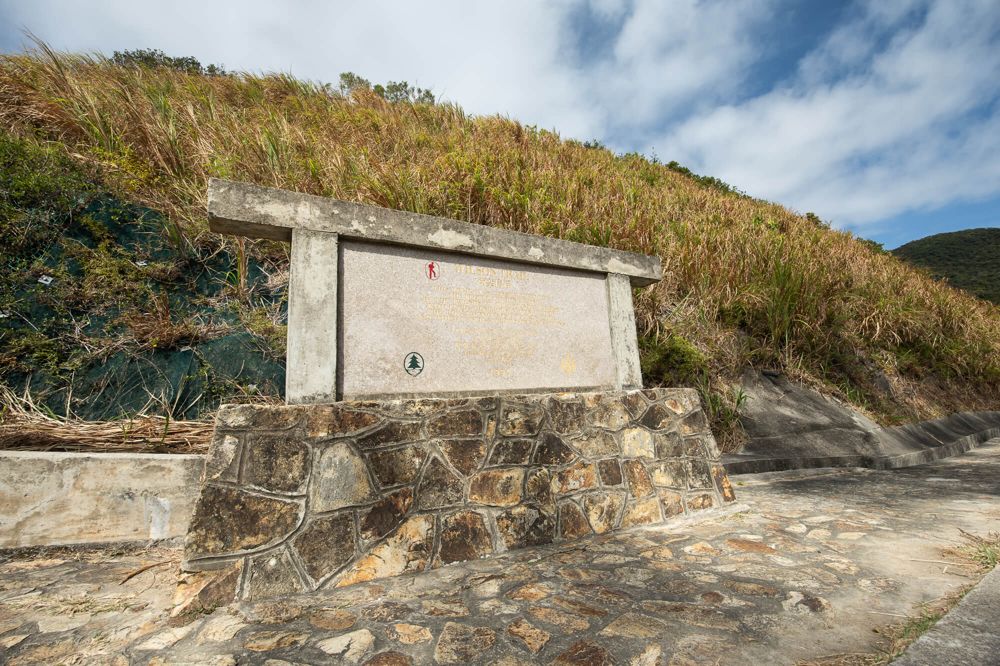
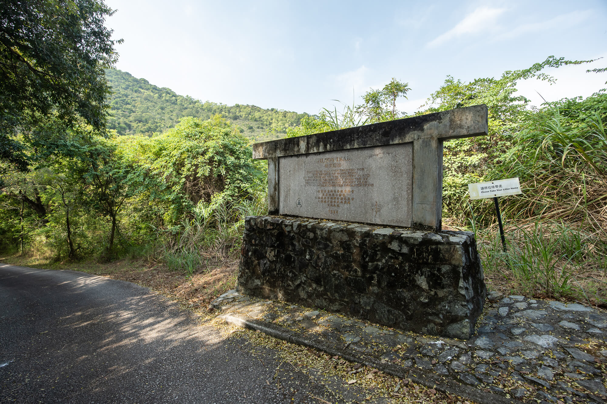

HKFT
HKFT
Wilson Trail is a long-distance hiking trail in Hong Kong. It was opened in 1996. It is 78 kilometers long and divided into 10 sections. It is the second longest hiking trail in Hong Kong, second only to the MacLehose Trail. The trail winds from Stanley in the south of Hong Kong Island to Nam Chung in the northeast of the New Territories, crossing many mountains and ridges in Hong Kong, and passing through eight country parks in Hong Kong: Tai Tam Country Park, Tai Tam Country Park (Quarry Bay Extension), Ma On Shan Country Park, Lion Rock Country Park, Kam Shan Country Park, Shing Mun Country Park, Tai Mo Shan Country Park and Pat Sin Leng Country Park. The Wilson Trail was named in memory of the 27th Governor of Hong Kong, Sir Wilson, who loved Hong Kong's mountains and hiking activities.
The first section of the ninth section goes down to the tranquil Hok Tau Reservoir, the second section climbs up Pingfeng Mountain and Huangling, and then walks through the rolling Pat Sin Leng Mountains; finally, walk along the ancient Hengqi Ancient Trail, and then descend to Nanchong to complete the entire Wilson Trail.
The Wilson Trail runs from south to north, and together with the MacLehose Trail connecting east and west, it divides Hong Kong and Kowloon like a cross. The route passes through urban areas, rural areas, ponds and mountains, with diverse landscapes. However, the route is divided by Victoria Harbour and can only be accessed through public transportation, which lacks integrity. In addition, the directions of some routes are marked with paint, which is not clear enough, but this has improved in recent years.
 Wilson Trail Full Hiking Map
Wilson Trail Full Hiking Map
| Wilson Trail Road Section | Distance | Duration | Landscape |
| Trail one. Stanley Gap Road - Hong Kong Parkview | 5 km | 2.5 hr | 3 |
| Trail two. Hong Kong Parkview - Quarry Bay | 7 km | 2 hr | 3 |
| Trail three. Lam Tin - Tseng Lan Shue | 9 km | 3 hr | 2.5 |
| Trail four. Tseng Lan Shue - Sha Tin Pass | 9 km | 3 hr | 3 |
| Trail five. Sha Tin Pass - Kowloon Reservoir | 8.5 km | 2.5 hr | 1 |
| Trail six. Kowloon Reservoir - Shing Mun Reservoir | 5 km | 2 hr | 1 |
| Trail seven. Shing Mun Reservoir - Yuen Tun Ha | 9.5 km | 2.5 hr | 2.5 |
| Trail eight. Yuen Tun Ha - Cloudy Hill | 8.5 km | 3.5 hr | 2.5 |
| Trail nine. Cloudy Hill - Pat Sin Leng | 10.5 km | 4.5 hr | 4 |
| Trail ten. Pat Sin Leng - Nam Chung | 6.5 km | 3 hr | 3.5 |